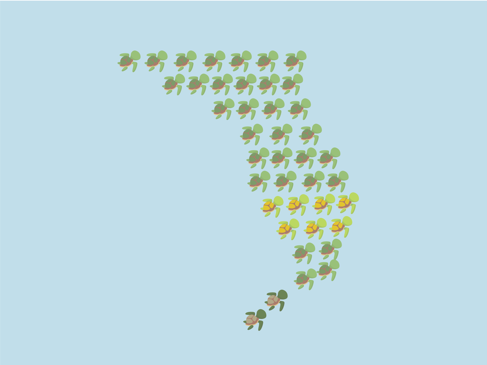

BY YI-CHIA CHENG
Data Description
The datasets are from
Florida Fish and Wildlife Conservation Commission and Official State of Florida Geographic Data Portal which include the locations, time, conditions of major kinds of sea turtles around Florida from 1988 to 2014.
The ocean around Florida is one of the most important habitat for the endangered and threatened sea turtles of the world. With global climate change, ocean pollution, does the number of sea turtles have significant change in the past two decades? The map will help us find out.
Florida Sea Turtles: Changes from 1988 to 2014
By sliding the bar to select the year and see the top three most common sea turtles around Florida-Green Turtles, Loggerhead and Kemp's Ridley.
If we look at the year closely, it's not hard to find several interesting findings: first, there is no data at all at the east coast of Florida in 2007. Since it looks very unusual, I would assume it's caused by some kind of data loss rather than we didn't find any sea turtle in the east coast in the whole year of 2017.
Second, before 2010, loggerhead usually used to have the most population around Florida. However, green turtles replace loggerhead become the most common species to be captured or found. Kemp's Ridley, on the other hand, has consistently remained the third of the past twenty years.